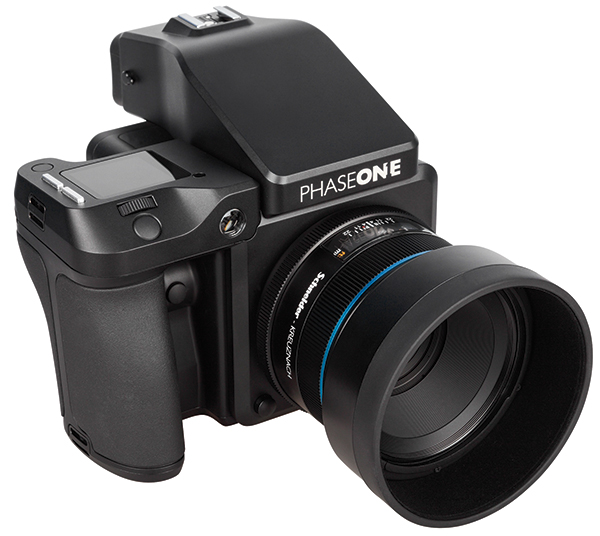
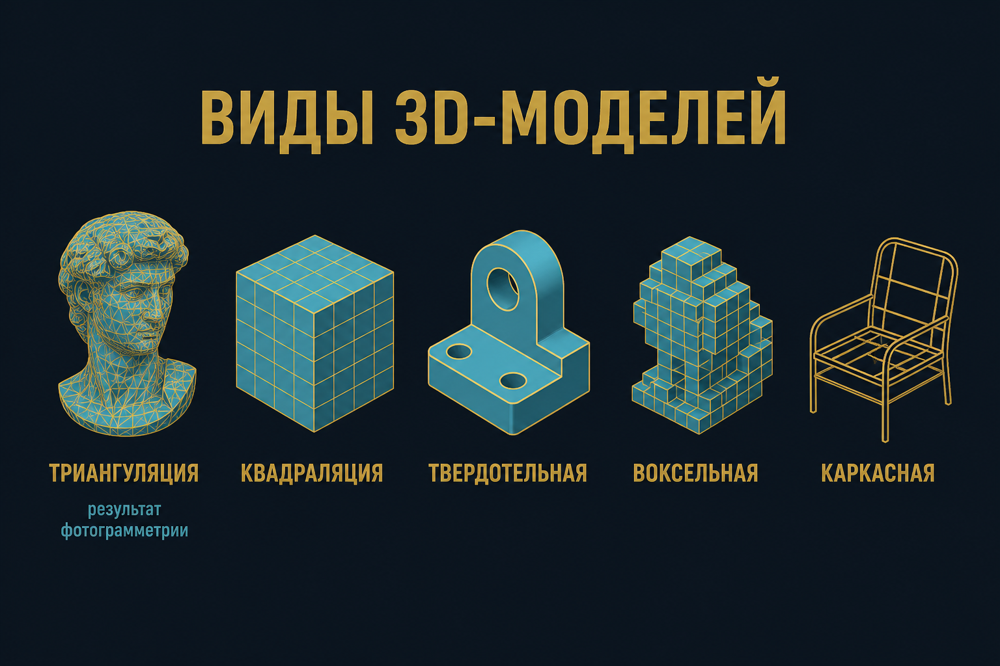
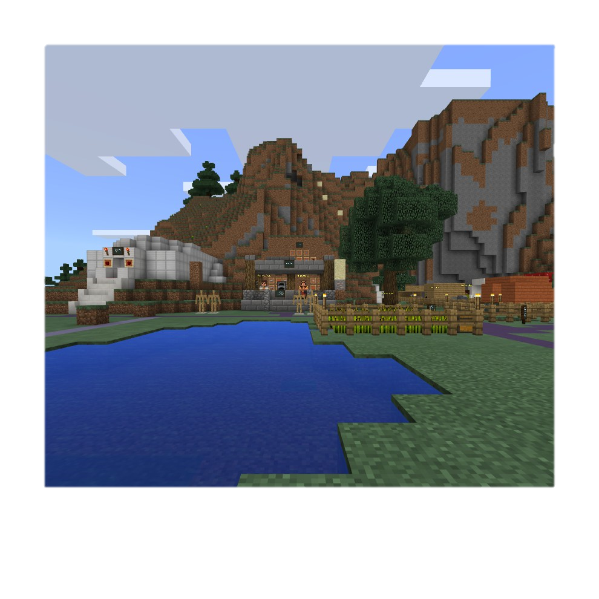
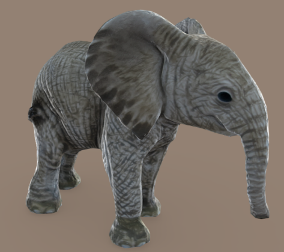
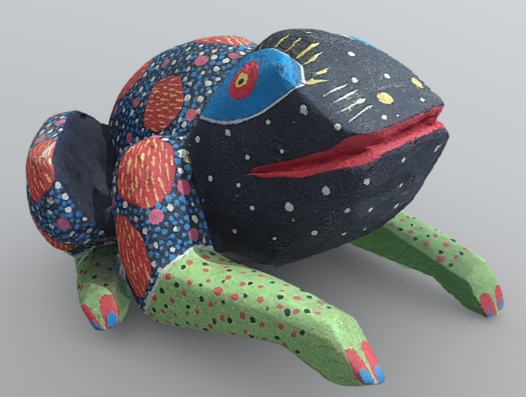
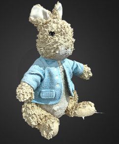

Предметное моделирование
Ф08 · стенд · виды моделей · съёмка · ретопология
Фотограмметрия
Форма, размеры, положение — по фото. Бытовой выход пары — замкнутая 3D-копия, не рендер «из головы».
Камера
Большая матрица, крупный пиксель, оптика, процессор. На практике — та, что есть.

Домашний стенд
Штатив · свет · рассеиватель · тросик · фон · поворотный стол
Виды моделей

Автомат из фото → триангуляция + текстура
Параллакс
p = X1 − X2
Z / f = − B / pнормальная пара


Объект
- матовый, цветной, простая геометрия
- не стекло, металл, шерсть, монотон
- не менять f и фокус · выключить автоповорот
Съёмка
Траектории вокруг. Лишние кадры лучше дыр между маршрутами. Рёбра — чаще.




Ретопология
Шум вниз, полигоны вниз (млн → тысячи), UV, карты нормалей вместо «ещё треугольников».
Одни снимки ≠ одна модель
Разное ПО и пресеты. Ошибка взаимного ориентирования ломает грани. Проще переснять, чем сутки тыкать маркеры.
Вопросы
- Какой тип модели выдаёт Metashape?
- Почему стекло не строится?
- Что нельзя менять в серии?
- Зачем ретопология?